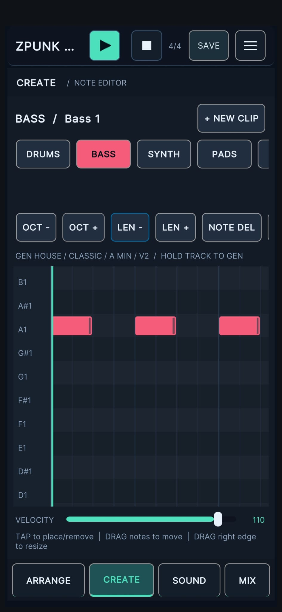

ZILLATRONICS / FIELD NOTES
The Blog.
Thoughts on mobile music-making, sampling, sequencing and the process of building ZPUNK. Practical notes on workflow, design and staying creative away from the studio.
Latest posts
04 ARTICLESCREATIVE PROCESS / ELECTRONIC MUSIC
When a Musical Idea Doesn't Need a Studio
Why a few minutes with a beat can matter more than a perfectly planned studio session—and who ZPUNK is really for.
NOVEMBER 3, 2026 · 4 MIN READ

TECHNO / BASS SEQUENCING
How to Write a Dark, Driving Techno Bassline
Build relentless momentum with 16th-note sequencing, a tight kick-and-bass relationship, minimal pitch changes and focused sound design.
NOVEMBER 1, 2026 · 6 MIN READ

WORKFLOW / UI DESIGN
Why ZPUNK Is Built in Portrait for Music on the Go
A phone-first groovebox shaped by limited space, fast decisions and the need to make music while commuting, travelling or simply away from the studio.
NOVEMBER 1, 2026 · 7 MIN READ

SAMPLING / TECHNIQUE
How to Sample Chops Effectively for Electronic Music
Seven practical ways to turn sampled fragments into grooves that feel musical, intentional and alive.
NOVEMBER 1, 2026 · 6 MIN READ